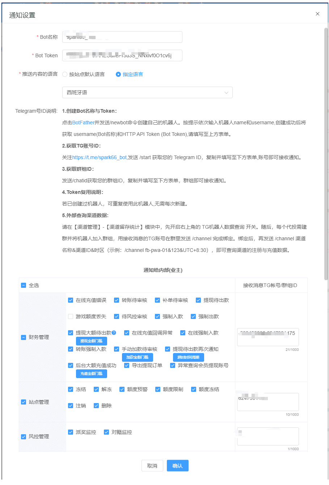
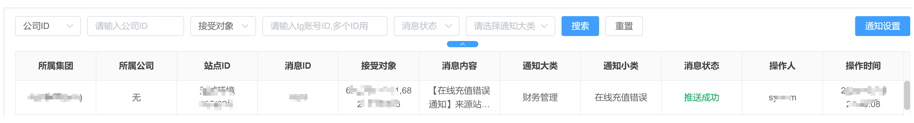
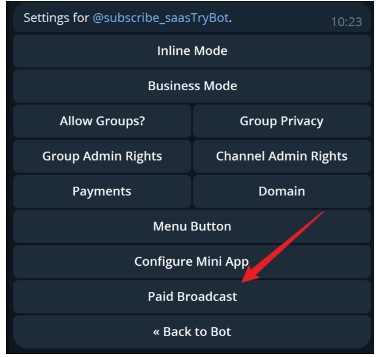
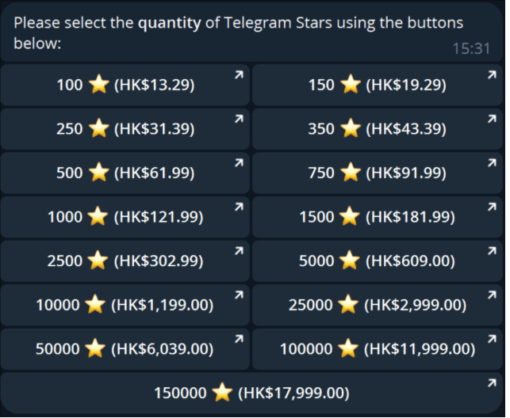

TG通知教程
1、通知设置
- 该功能为TG通知消息设置，业主自己提供TG机器人发送消息到提供接收消息的TG账号或群聊中
- Bot Token: 已创建过机器人,可以重复使用Token,也可以单独配置(建议单独配置防止TG风控)
- 推送内容的语言：TG机器人发送内容的语言
- 接收消息TG账号/群组ID：需要接收消息的TG账号或群组ID，删除后不再接收TG机器人消息
- 通知类型：需要发送的消息类型

- 提现大额待出款：需要配置金额门槛，达到才会发出通知！
- 手动加款待审核：需要配置金额门槛，达到才会发出通知！
- 提现待出款再次通知：提现订单每超过此时间周期仍未被锁定处理，则发出通知！
- 提现金额门槛：需要超过金额门槛，才会发出通知！
- 后台大额充值成功：需要超过金额门槛的在线、转账、客服代充、手动加款、补单上分成功后，才会发出通知！
2、消息列表

- 搜索：支持搜索消息内容:符号后的数据
- 消息内容：鼠标悬浮展示该消息所有内容
注：如果存在消息量过多导致机器人被封，导致无法接收到消息，可以通过升级TG机器人来缓解(开通 Paid Broadcast，提高 bot 速率)
官方说明：https://core.telegram.org/bots/faq#my-bot-is-hitting-limits-how-do-i-avoid-this。
在 @BotFather 开通 Paid Broadcast：

开通的前提是账户里要有 100000 stars。可去 @PremiumBot 购买。发送 /stars 命令后，出现购买界面：
